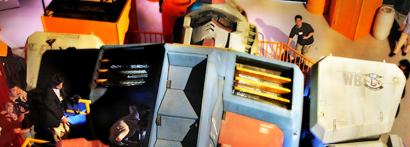
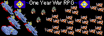
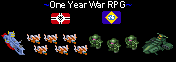
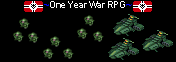
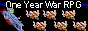
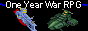
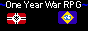
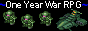

Links
Official Gundam Sites
Bandais Official Gundam Website
RPG Sites
Planetzebes.net
My archival site for maintaining the PBEM RPG community. Has an extensive list of archived RPGs, as well as news on current events and games run by our group.
Other Games
Automated Card Tracking System
A site for playing tabletop board games with other people online, it automates card draws and dice rolling, and includes a custom-made program called Cyberboard that lets you update the actual board on your computer. They support more than 20 games, mostly historical wargames, and I've been playing with them off and on for years. Pretty fun.
Simchamber
A site that is based on the Super Robot Wars game series, allowing for fights between differing SRW mecha. It's gone through several versions and more or less has been up for years, making it one of the longest running games of the sort to date. Our main page banner was made by a member of their staff.
Informational Gundam Websites
Mecha Domain
The Mecha Domain, or MAHQ, is commendable for its amazingly large cataloguing of the different mobile weapons in every Gundam related thing you can think of. It is extremely useful for learning about the technology of the show, but is not always correct and should be taken with a grain of salt.
High Frontier
A more scientific sort of informational website, High Frontier looks at all of the real science behind the Gundam series, telling how and why the space colonies work. High Frontier also houses the absolutely massive "official" Gundam timeline that we hacked up for our own personal use.
Gears Online
A good site for looking at information on some of the more vague Gundam mangas and series, such as Sentinal, Crossbone, and Gaia Gear.
Library of Londenion
Although it is now down, archive.org has a decent backup of the old Library of Londenion, which in its day was filled with early Gundam translations and information. The neatest thing about this site is the catalogue of emblems from not only EF and Zeon, but also neutral parties.
MS Era
A site listing scans of all of the MS Era pictures, many of which were used for the RPGs banners. While not entirely informational, and pretty wholesomely inaccurate, some of these scans are amazingly pretty, and it's worth a look through.
Linking images
Because I spend way too much time dicking around on photoshop, I've made a lot of little banners for linking purposes. If you want to use one to link to this website from your own, please ask me first.
  
   